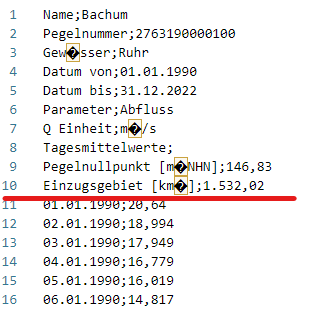
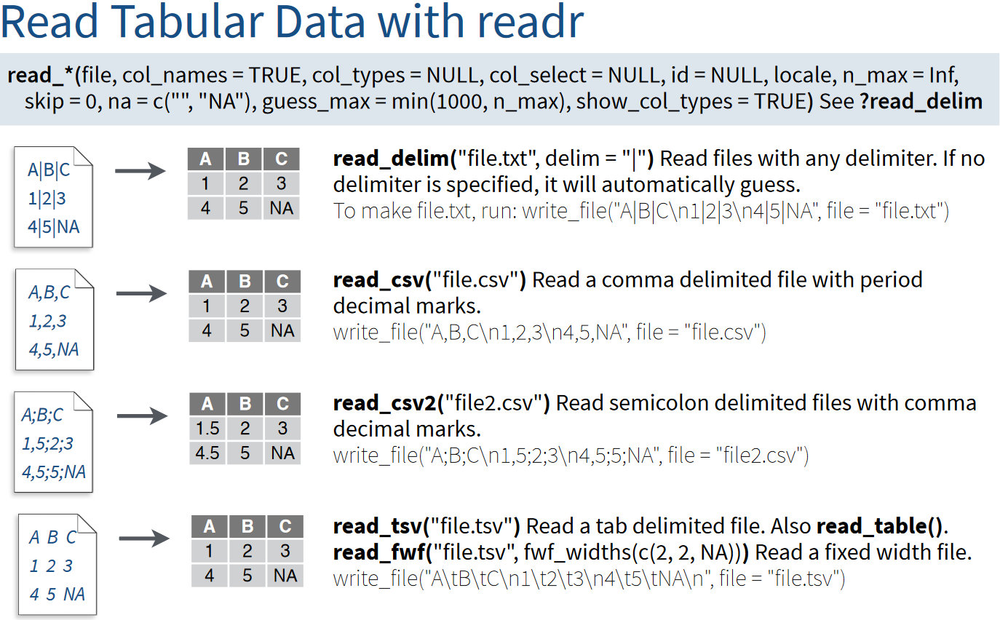
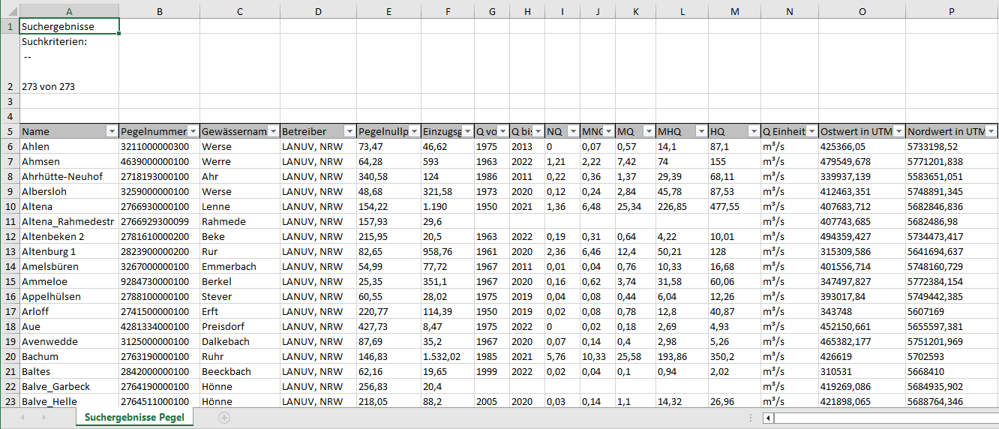

# load the library
library(tidyverse)
fn_Bachum <- "https://raw.githubusercontent.com/HydroSimul/Web/main/data_share/Bachum_2763190000100.csv"Data Loading
This Aritcl will show the process to load data from other files. I t will divide into four paties: plain text (read able ASCII), Excel, NetCDF and spatial data.
1 Plain text File
For more details about date (file) format, you can refer to the article titled Basic Data & File Format.
1.1 Example File
Let’s start with an example CSV file named Bachum_2763190000100.csv. This file contains pegel discharge data and is sourced from open data available at ELWAS-WEB NRW. You can also access it directly from the internet via Github, just like you would access a local file.
Take a look:

1.2 Library and functions
First, we need to load the necessary library tidyverse. This library collection includes readr for reading files and dplyr for data manipulation, among others.
And, we set the URL address as the file path (including the file name).
The documentation for the readr library is available online and can be accessed at https://readr.tidyverse.org.
Of particular interest are the following functions:
We can observe that the CSV file is divided by semicolons. Therefore, it’s more appropriate to use read_csv2() rather than read_csv().
The difference between read_*() functions in the readr package is determined by the delimiter character used in the files:

# load the library
import pandas as pd
fn_Bachum = "C:\Lei\HS_Web\data_share/Bachum_2763190000100.csv"The documentation for the pandas library is available online and can be accessed at https://pandas.pydata.org/docs/index.html.
Of particular interest are the following functions:
1.3 Metadata Handel
Metadata can vary widely between datasets, so it’s handled separately from the data body.
There are three ways to deal with metadata:
Directly Ignore: This approach involves ignoring metadata when it’s redundant or readily available from other data sources, such as file names or external references.
Extract from Text: When metadata is crucial but not in table form, you can extract information from text strings. For more information, refer to the section on string manipulation Section 4.
Read as a Second Table: If metadata is well-organized in a tabular format, it can be read as a separate table to facilitate its use.
In the Bachum_2763190000100.csv file, you will find that there are 10 lines of metadata, which are well-organized in a tabular format. However, it’s important to note that the consistency in values column varies.
1.3.1 Directly Ignore use grguments skip
# skip = 10
read_csv2(fn_Bachum, skip = 10, n_max = 10, col_names = FALSE)# A tibble: 10 × 2
X1 X2
<chr> <dbl>
1 01.01.1990 20.6
2 02.01.1990 19.0
3 03.01.1990 17.9
4 04.01.1990 16.8
5 05.01.1990 16.0
6 06.01.1990 14.8
7 07.01.1990 14.3
8 08.01.1990 14.0
9 09.01.1990 14.4
10 10.01.1990 14.51.3.2 Read metadata as table
More details in the next section:
1.4 Load tabular data
To read the first 10 lines of metadata, you can use the n_max setting with a value of n_max = 10 in the read_csv2() function.
read_csv2(fn_Bachum, n_max = 10, col_names = FALSE)# A tibble: 10 × 2
X1 X2
<chr> <chr>
1 "Name" "Bachum"
2 "Pegelnummer" "2763190000100"
3 "Gew\xe4sser" "Ruhr"
4 "Datum von" "01.01.1990"
5 "Datum bis" "31.12.2022"
6 "Parameter" "Abfluss"
7 "Q Einheit" "m\xb3/s"
8 "Tagesmittelwerte" <NA>
9 "Pegelnullpunkt [m\xfcNHN]" "146,83"
10 "Einzugsgebiet [km\xb2]" "1.532,02" After dealing with the metadata, we can proceed to load the data body using the readr::read_*() function cluster. Plain text files typically store data in a tabular or matrix format, both of which have at most two dimensions. When using the readr::read_() function, it automatically returns a tibble. If your data in the text file is in matrix format, you can use conversion functions like as.matrix() to transform it into other data structures.
# 1. load
tb_Read <- read_csv2(fn_Bachum, skip = 10, n_max = 10, col_names = FALSE)
tb_Read# A tibble: 10 × 2
X1 X2
<chr> <dbl>
1 01.01.1990 20.6
2 02.01.1990 19.0
3 03.01.1990 17.9
4 04.01.1990 16.8
5 05.01.1990 16.0
6 06.01.1990 14.8
7 07.01.1990 14.3
8 08.01.1990 14.0
9 09.01.1990 14.4
10 10.01.1990 14.5# 2. convert
df_Read <- as.data.frame(tb_Read)
mat_Read <- as.matrix(tb_Read)
df_Read X1 X2
1 01.01.1990 20.640
2 02.01.1990 18.994
3 03.01.1990 17.949
4 04.01.1990 16.779
5 05.01.1990 16.019
6 06.01.1990 14.817
7 07.01.1990 14.296
8 08.01.1990 13.952
9 09.01.1990 14.403
10 10.01.1990 14.500mat_Read X1 X2
[1,] "01.01.1990" "20.640"
[2,] "02.01.1990" "18.994"
[3,] "03.01.1990" "17.949"
[4,] "04.01.1990" "16.779"
[5,] "05.01.1990" "16.019"
[6,] "06.01.1990" "14.817"
[7,] "07.01.1990" "14.296"
[8,] "08.01.1990" "13.952"
[9,] "09.01.1990" "14.403"
[10,] "10.01.1990" "14.500"tb_Read = pd.read_csv(fn_Bachum, skiprows=10, nrows=10, header=None, delimiter=';', decimal=',', encoding='latin-1')
print(tb_Read) 0 1
0 01.01.1990 20.640
1 02.01.1990 18.994
2 03.01.1990 17.949
3 04.01.1990 16.779
4 05.01.1990 16.019
5 06.01.1990 14.817
6 07.01.1990 14.296
7 08.01.1990 13.952
8 09.01.1990 14.403
9 10.01.1990 14.5001.5 Data type
When directly reading all metadata into one table, you may encounter mixed data types. In the metadata, there are three data types:
- Numeric: Examples include
PegelnullpunktandEinzugsgebiet. - String: This category covers fields like
Name,Pegelnummer, and others. - Date: Date values are present in columns like
Datum vonandDatum bis.
In a data frame (tibble), columns must have the same data type. Consequently, R will automatically convert them to a single data type, which is typically string.
To address this situation, you should specify the data type you want to read. For example, to read the date values in lines 4 and 5, you can use the following settings: 1. skip = 3 to skip the first three lines of metadata. 2. n_max = 2 to read the next two lines (lines 4 and 5) as date values.
# skip = 10
read_csv2(fn_Bachum, skip = 3, n_max = 2, col_names = FALSE)# A tibble: 2 × 2
X1 X2
<chr> <chr>
1 Datum von 01.01.1990
2 Datum bis 31.12.2022Unfortunately, R may not always recognize date values correctly, so you may need to perform additional steps for conversion:
After Reading: This involves transforming the data from its initial format to the desired date format within your R environment.
Set the Data Type by Reading: Another approach is to set the data type while reading the data.
To address the issue of date recognition, you can set the col_types parameter to "cD" when reading the data. This informs the function that the first column contains characters (c) and the second column contains Dates (D).
# skip = 10
read_csv2(fn_Bachum, skip = 3, n_max = 2, col_names = FALSE, col_types = "cD")# A tibble: 2 × 2
X1 X2
<chr> <date>
1 Datum von NA
2 Datum bis NA Unfortunately, the default date format in R may not work for German-style dates like “d.m.Y,” as R primarily recognizes the “Y-m-d” format. To handle this, you can convert the dates using function as.Date() and specify the date format using the format argument, such as format = "%d.%m.%Y".
df_Date <- read_csv2(fn_Bachum, skip = 3, n_max = 2, col_names = FALSE)
df_Date$X2 <- df_Date$X2 |> as.Date(format = "%d.%m.%Y")
df_Date# A tibble: 2 × 2
X1 X2
<chr> <date>
1 Datum von 1990-01-01
2 Datum bis 2022-12-312 Excel File
When we discuss the combination of the software Excel with data files in formats such as .xls or .xlsx, there are numerous possibilities for data science. However, when we specifically consider the file format, there are distinct differences between plain text and Excel files:
Plain Text File vs. Excel for Data Storage
| Aspect | Plain Text File | Excel File |
|---|---|---|
| Data Structure | Typically stores data in a tabular format or matrix. | Stores data in structured worksheets with multiple tables (sheets). |
| Compatibility | Universally compatible with various software and programming languages. | Compatibility may vary, and not all software can read Excel files. |
| Human-Readable | Easily readable by humans in a simple text format. | Readable by humans but may include formatting that isn’t immediately apparent. |
| Data Transfer | Easily shared and transferred between different platforms and systems. | May require conversion or specific software for seamless data transfer. |
| Data Import/Export | May require custom import/export scripts for specific applications. | Supports standardized import/export formats for various applications. |
| Version Control | Suitable for version control systems (e.g., Git) for tracking changes. | Not well-suited for version control due to binary format and complex changes. |
| Data Analysis | Requires additional software to analyze data (e.g., R or Python). | Offers built-in data analysis tools (e.g., formulas, charts). |
| Openness and Access | Open and transparent; data can be accessed and edited with any text editor. | Proprietary format may require specific software (Microsoft Excel) to access and edit. |
Unlike plain text files, Excel files have the capability to contain multiple tables, known as sheets. In Excel, each cell within a sheet is uniquely identified by its specific coordinates. Rows are indexed with numerical values, and columns are identified using alphabetical indices. By combining the sheet name with these coordinates, it is possible to precisely locate any cell within an Excel file and retrieve the value it contains.
2.1 Example File
Let’s begin with an example Excel file named Pegeln_NRW.xlsx. This file contains information about measurement stations in NRW (Nordrhein-Westfalen, Germany) and is sourced from open data available at ELWAS-WEB NRW. You can also access it directly from Github.
Take a look:

2.2 R library and functions
To load the necessary library, readxl, and access its help documentation, you can visit this link. The readxl::read_excel() function is versatile, as it can read both .xls and .xlsx files and automatically detects the format based on the file extension. Additionally, you have the options of using read_xls() for .xls files and read_xlsx() for .xlsx files. More details in the Page.
# load the library
library(readxl)
# The Excel file cannot be read directly from GitHub. You will need to download it to your local machine first
fn_Pegeln <- "C:\\Lei\\HS_Web\\data_share/Pegeln_NRW.xlsx"2.3 Load tabular data
Similar to plain text files, metadata is often provided before the data body in Excel files. In Excel, each cell can be assigned a specific data type, while in R tables (data.frame or tibble), every column must have the same data type. This necessitates separate handling of metadata and data body to ensure that the correct data types are maintained.
Unlike plain text files where we can only select lines to load, Excel allows us to define coordinates to access a specific celles-box wherever they are located.
2.3.1 First try without any setting
# try without setting
tb_Pegeln <- read_excel(fn_Pegeln)
tb_Pegeln# A tibble: 277 × 16
Suchergebnisse Pegel.…¹ ...2 ...3 ...4 ...5 ...6 ...7 ...8 ...9 ...10
<chr> <chr> <chr> <chr> <chr> <chr> <chr> <chr> <chr> <chr>
1 "Suchkriterien:\n -- \… <NA> <NA> <NA> <NA> <NA> <NA> <NA> <NA> <NA>
2 <NA> <NA> <NA> <NA> <NA> <NA> <NA> <NA> <NA> <NA>
3 <NA> <NA> <NA> <NA> <NA> <NA> <NA> <NA> <NA> <NA>
4 "Name" Pege… Gewä… Betr… Pege… Einz… Q von Q bis NQ MNQ
5 "Ahlen" 3211… Werse LANU… 73,47 46,62 1975 2013 0 0,07
6 "Ahmsen" 4639… Werre LANU… 64,28 593 1963 2022 1,21 2,22
7 "Ahrhütte-Neuhof" 2718… Ahr LANU… 340,… 124 1986 2011 0,22 0,36
8 "Albersloh" 3259… Werse LANU… 48,68 321,… 1973 2020 0,12 0,24
9 "Altena" 2766… Lenne LANU… 154,… 1.190 1950 2021 1,36 6,48
10 "Altena_Rahmedestraße" 2766… Rahm… LANU… 157,… 29,6 <NA> <NA> <NA> <NA>
# ℹ 267 more rows
# ℹ abbreviated name: ¹`Suchergebnisse Pegel.xlsx 14.09.2023 10:01`
# ℹ 6 more variables: ...11 <chr>, ...12 <chr>, ...13 <chr>, ...14 <chr>,
# ...15 <chr>, ...16 <chr>When we provide only the file name to the function, we will always retrieve all the content from the first sheet. However, due to the limitations in R tables, every column will be recognized as the same data type, typically character.
2.3.2 Give a range
# using the range argument
tb_Pegeln_Range <- read_excel(fn_Pegeln, range = "Suchergebnisse Pegel!A5:P10")
tb_Pegeln_Range# A tibble: 5 × 16
Name Pegelnummer Gewässername Betreiber `Pegelnullpunkt [müNHN]`
<chr> <chr> <chr> <chr> <chr>
1 Ahlen 3211000000300 Werse LANUV, NRW 73,47
2 Ahmsen 4639000000100 Werre LANUV, NRW 64,28
3 Ahrhütte-Neuhof 2718193000100 Ahr LANUV, NRW 340,58
4 Albersloh 3259000000100 Werse LANUV, NRW 48,68
5 Altena 2766930000100 Lenne LANUV, NRW 154,22
# ℹ 11 more variables: `Einzugsgebiet [km²]` <chr>, `Q von` <chr>,
# `Q bis` <chr>, NQ <chr>, MNQ <chr>, MQ <chr>, MHQ <chr>, HQ <chr>,
# `Q Einheit` <chr>, `Ostwert in UTM` <chr>, `Nordwert in UTM` <chr>
Warning
The data type of “Pegelnullpunkt [müNHN]” appears to be incorrect due to improper settings in Excel.
2.4 Data type
Compared to plain text files, Excel data already contains data type information for each cell. Therefore, the data type will be directly determined by the data type specified in Excel.
However, there are instances where the data type in Excel is not correctly set, so manual data type conversion may be necessary. For more details, refer to Section 1.5.
3 NetCDF
the process loading of netCDF is seperated in the page
4 Text & String
more details